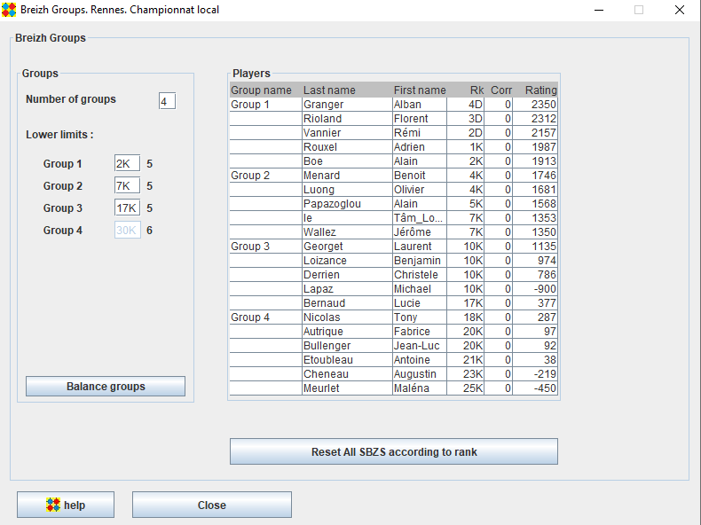

With the groups panel, you define the number of groups (max 9) and the lower limits of each group.
The "Balance groups" button sets the lower limits so that the numbers of players in groups are balanced , as far as possible,
The players panel dispalys the groups and players.
If you want to upgrade/downgrade a player, select the player, right click and choose Upgrade/Downgrade from the popup menu (see the Corr column).
The "Reset All SBSZ according to rank" button resets all the correcions (corr column).